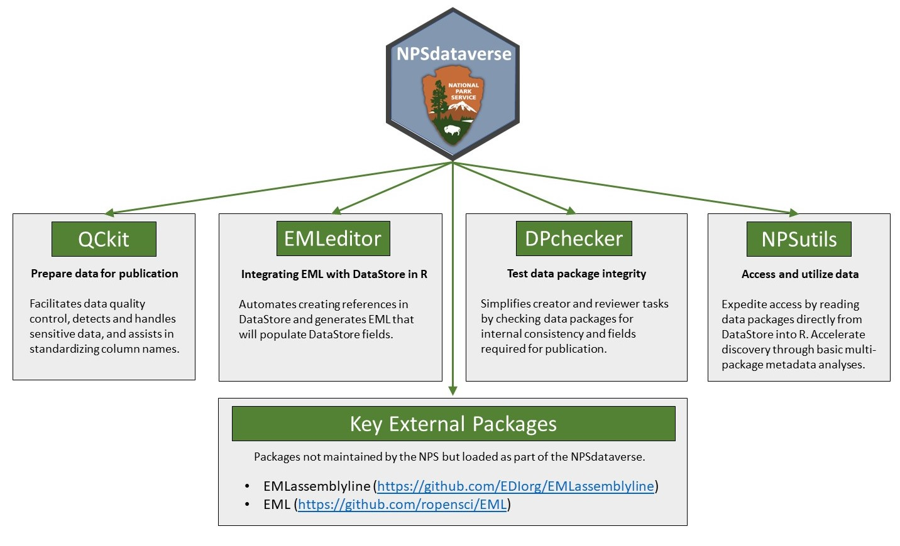
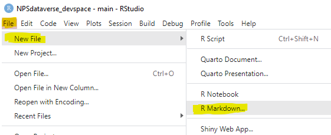

 NPSdataverse loads a suite of R packages for creating, manipulating, and accessing data packages including interacting with DataStore. This is an early version of the NPSdataverse. Please request enhancements and bug fixes through Issues.
Installation
You can install the development version of NPSdataverse from GitHub with:
# install.packages("pak")
pak::pkg_install("nationalparkservice/NPSdataverse")NPSdataverse will install the following R packages:
| Package | Location |
|---|---|
| QCkit | https://nationalparkservice.github.io/QCkit/ |
| EMLassemblyline (EAL) | https://ediorg.github.io/EMLassemblyline/ |
| EML | https://www.cran-e.com/package/EML |
| EMLeditor | https://nationalparkservice.github.io/EMLeditor/ |
| DPchecker | https://nationalparkservice.github.io/DPchecker/ |
| NPSutils | https://nationalparkservice.github.io/NPSutils/ |
(R packages in bold are developed by NPS)
Trouble shooting installation
Each package within the NPSdataverse has a number of dependencies, most of which are hosted on CRAN. During the initial install of NPSdataverse, you may be prompted to install or update these dependencies. The initial installation can take some time and require multiple iterative package updates/installs. Depending on how they were initially installed, some dependent packages may fail update or to install. In this case you can try running
to find where your packages are located on your local machine. Navigate to that location and delete the offending package. Then try to re-install.
Updating NPSdataverse packages
Many of the NPSdataverse packages are in a phase of rapid development. When you load the NPSdataverse (using library(NPSdataverse)), if you are online, NPSdataverse will check for new versions of the packages stored on GitHub (all the packages except r/EML). NPSdataverse will tell you if all your packages are up to date. Conversely if any of the NPSdataverse packages need to be updated, NPSdataverse will indicate which packages need updating and how to perform the updates. If you do not get any notices about whether your packages are up to date or not, then the NPSdataverse package itself needs to be updated. See Installation for instructions on how to update the NPSdataverse package.
Creating data packages
If you are creating a data package and need to generate EML metadata make sure all of your .csv data files are in a single folder.
After loading NPSdataverse, from within Rstudio select the “File” menu. Select “New File” from the drop down menu and choose “R Markdown”. In the dialog box that pops up, select “From Template” and then click on the template labelled “Editable_EML_Creation_Workflow” and click “OK”.


This will open a new file on that you can edit to generate EML metadata for your data package. See the web pages associated with EMLeditor for additional information, instructions, and examples.